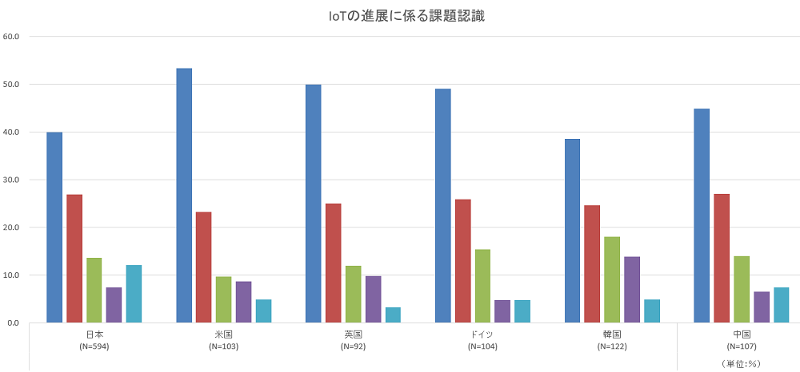
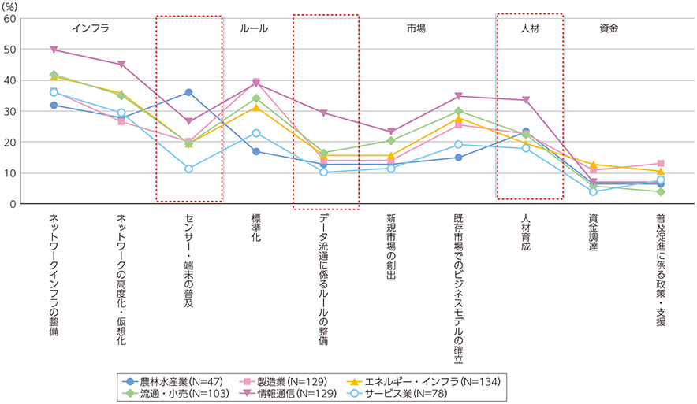
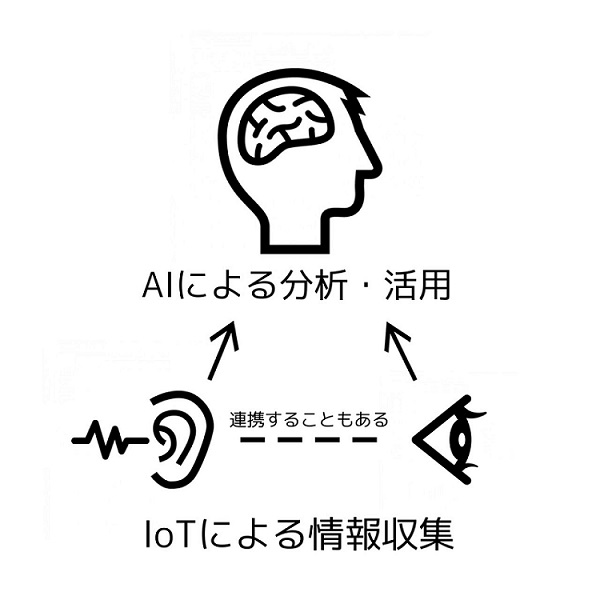
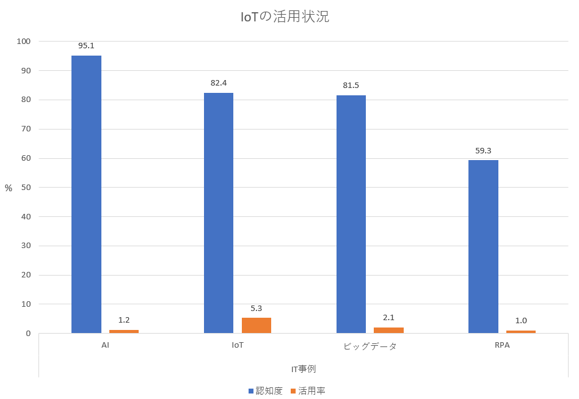

そして数ある課題の中でも「人材育成」に関する課題認識がやはり高い傾向である。

※青：インフラ（ネットワーク高度化・仮想化/インフラ整備/端末センサーの普及）
赤：ルール（データ流通に係るルールの整備/標準化）
緑：市場（新規市場の創出/既存市場でのビジネスモデル確立）
紫：資金（普及促進に係る政策・支援/資金調達）
水色：人材育成
各産業分けデータを見てみると、情報通信においては、「データ流通に係るルールの整備」の割合が高く、これはIoTに係るデータ流通を担う立場の企業が多いことが背景にあるとされる。加えて「人材育成」の回答が他産業と比べても高い傾向が見られ、IoTに関する専門知識の他、異業界連携やビジネスプロデュースが不可欠であるという認識が背景にあるとされる。

産業用に普及するには時間がかかるという調査結果から、現在のAIとIoTの企業認知度、活用率も調べてみた。少し話がそれるがここでAIとIoTの違いから入っていこうと思う。参照サイト：IT系エンジニア AI研究所
ざっくりまとめると、IoT（Internet of Thing）はインターネットと様々なモノが接続されること、AIは(Artficial Intelligence)は機器等を制御する高度な技術である。AIが人工知能と呼ばれているように、AI=脳と考えると、IoT≒腕や足などの感覚神経（センサー）を持ったパーツとも言える。また、データを分析して活用するのがAIであり、その分析するデータを収集するのがIoTであるとも言える。この2つが組み合わさる、融合させることで大きな効果が得られ、私たちの暮らしをより豊かにする。

今となってはAIのPEPPERくんやスマート家電は知られつつあるが、企業向けに導入・活用というのはやはりまだ追いついていないと感じる。推測するに、そもそもの認知度やどのように効果があるのか知られていないため、手が出しにくい状況なのではと感じている。
調査してみると、意外なことに企業側ではそれぞれ認知度はあったものの活用率の低さが際立っていることがわかる。AIとIoTの数値を比較してみると、AIの方がわずかに認知度は高いが、活用するまでには至っていないことがわかる。その点IoTの方が活用されている割合が高い。この違いは活用するまでのハードルがAIの方が高いという背景が見える。また、両方に共通しているのは導入して効果が現れるまで時間がかかる点にあるという。参照サイト

一般家庭の普及率も見てみる。参照サイト
スマートスピーカーについてのアンケートでは年代別で平均した認知率は約87.2%。10代～60代までの認知率は8割強と言える。一方で購入したことがあるのはそのうちの1割ほどであった。
また同様に、IoT家電についてのアンケートでは7割以上が認知しており購入に至ったのは1割ほどだったという結果だった。この結果から、認知はしているものの購入までに踏み切れない問題があるようだ。また、細かいようだがスマートスピーカーという便利なグッズに対しての認知度は高いようだが、IoTと言われるとよくわかっていない人が多いこともわかる。